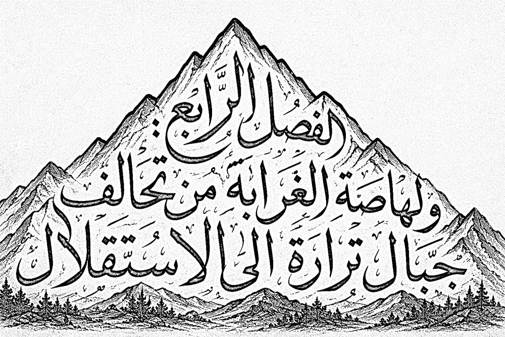
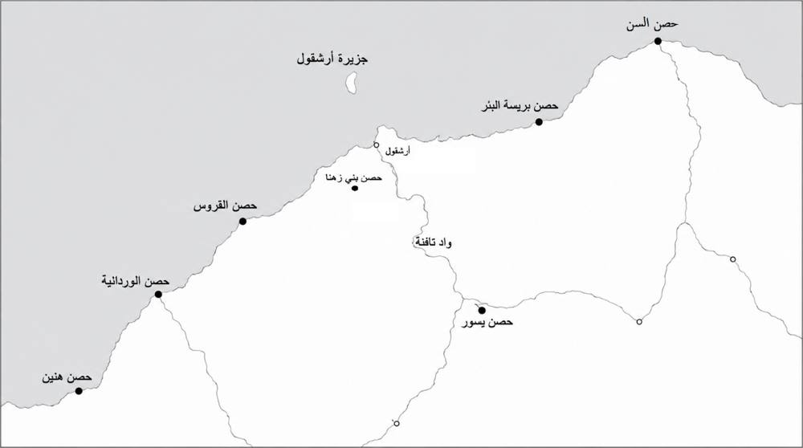

الفصل الرابع: ولهاصة الغرابة من تحالف جبال ترارة الى الاستقلال

مقدمة
يمثل هذا الفصل المرحلة الأخيرة من المسار التاريخي لقبيلة ولهاصة الغرابة، وهي مرحلة اتسمت بتسارع التحولات السياسية والعسكرية التي عرفها الغرب الجزائري منذ القرن السادس عشر إلى غاية الاستقلال الوطني سنة 1962م. فبعد أن تناولت الفصول السابقة الجذور النوميدية للقبيلة، وتطورها خلال العصور الإسلامية والزيانية، يركز هذا الفصل على دراسة أدوارها في مواجهة التحولات الإقليمية التي صاحبت التوسع الإسباني، ثم اندماجها في التنظيمات السياسية والعسكرية للعهد العثماني، قبل انتقالها إلى مقاومة الاحتلال الفرنسي والمشاركة في الثورة التحريرية الجزائرية.128
وتكتسب هذه المرحلة أهمية خاصة لأنها تكشف عن قدرة ولهاصة الغرابة على الحفاظ على تماسكها الاجتماعي وتنظيمها القبلي، مع التكيف في الوقت نفسه مع التحولات السياسية المتعاقبة. فقد شكلت القبيلة أحد الأعمدة الرئيسة لتحالف جبال ترارة الذي تأسس في منتصف القرن السادس عشر لمواجهة الخطر الإسباني، وأسهمت في حماية السواحل والممرات الجبلية، مستفيدة من موقعها الاستراتيجي الممتد بين الساحل المتوسطي والداخل التلمساني. كما حافظت خلال العهد العثماني على مكانتها ضمن المنظومة الدفاعية لبايلك الغرب، مع احتفاظها باستقلالها القبلي النسبي في إطار العلاقة التي ربطت السلطة المركزية بالقبائل الحدودية.129
ومع الاحتلال الفرنسي سنة 1830م، دخلت ولهاصة الغرابة مرحلة جديدة اتسمت بالمقاومة المسلحة إلى جانب الأمير عبد القادر، قبل أن تتعرض لسياسات المصادرة والاستيطان وإعادة التنظيم الإداري التي استهدفت تفكيك بنيتها القبلية وإعادة تشكيل مجالها الترابي بما يخدم المشروع الاستعماري. غير أن هذه السياسات لم تُنهِ حضور القبيلة في التاريخ الوطني، إذ واصل أبناؤها الانخراط في مختلف أشكال المقاومة، وصولًا إلى المشاركة الفاعلة في الثورة التحريرية، قبل أن تستعيد الجزائر استقلالها وتباشر إعادة تنظيم مجالها الإداري ضمن الدولة الوطنية.130
واعتمدت هذه الدراسة على المقارنة بين المصادر العربية الكلاسيكية، وفي مقدمتها مؤلفات ابن مريم التلمساني، والمصادر العثمانية، والوثائق الإدارية والعسكرية الفرنسية، إضافة إلى الدراسات الأكاديمية الحديثة، وذلك بهدف إعادة بناء التطور التاريخي لولهاصة الغرابة خلال هذه المرحلة، وربط تاريخها المحلي بالسياق السياسي والعسكري العام الذي عرفه الغرب الجزائري منذ القرن السادس عشر حتى قيام الدولة الجزائرية المستقلة
.2.4دور ولهاصة الغرابة في تحالف جبال ترارة
شكّلت ولهاصة الغرابة إحدى أهم القوى القبلية في المجال الغربي لتلمسان، وكان لها دور بارز في منظومة الأحلاف التي تشكلت بجبال ترارة خلال القرن السادس عشر، في سياق تصاعد التهديد الإسباني على السواحل الغربية للمغرب الأوسط. ولم يكن هذا التحالف كيانًا سياسيًا موحدًا، بقدر ما كان إطارًا للتضامن القبلي والعسكري، هدفه توحيد جهود القبائل في الدفاع عن البلاد وحماية الممرات الجبلية والساحلية.131
ويورد ابن مريم التلمساني في كتابه البستان في ذكر الأولياء والعلماء بتلمسان أن الولي الصالح عبد الرحمن اليعقوبي جمع سنة 955هـ/1548م رؤساء وأعيان قبائل ترارة في اجتماع تاريخي، دعاهم فيه إلى نبذ الخلافات وتوحيد الصفوف لمواجهة الخطر الإسباني. ويذكر أن هذا الحلف ضم قبائل ولهاصة الغرابة، وكومية، وبني منير، وبني بوسعيد، والسواحلية، وبني خالد، وغيرها من القبائل المجاورة، التي تعاهدت على التعاون في الدفاع عن الثغور، وإسناد المجاهدين، وتأمين المسالك الرابطة بين تلمسان والساحل.132
وتبرز رواية ابن مريم المكانة التي احتلتها ولهاصة الغرابة داخل هذا الحلف، إذ كانت بحكم موقعها الجغرافي الممتد بين مرتفعات ترارة والساحل الغربي تمثل إحدى الركائز الأساسية في منظومة الدفاع الإقليمي، حيث أسهمت في مراقبة الممرات الطبيعية، وتأمين طرق الاتصال والإمداد، والمشاركة في مقاومة التوغلات الإسبانية. كما يظهر من سياق الرواية أن التحالف لم يكن مجرد اتفاق عسكري مؤقت، بل كان تجسيدًا لتقاليد التضامن القبلي التي ميزت مجتمع ترارة، وأسهمت في الحفاظ على تماسكه خلال مرحلة اتسمت بالاضطراب السياسي والعسكري.
وتؤكد الدراسات الحديثة، استنادًا إلى هذه الرواية وغيرها من المصادر، أن اجتماع سنة 955هـ/1548م مثّل إحدى أبرز محطات تنظيم المقاومة القبلية في غرب الجزائر، وأسهم في الحد من قدرة الإسبان على التوسع خارج قواعدهم الساحلية، مما حافظ على استقلال المجال الجبلي لترارة وبلاد ولهاصة عن الاحتلال المباشر طوال جانب مهم من القرن السادس عشر133. كما يعكس هذا التحالف استمرار تقاليد التنظيم القبلي في المغرب الأوسط، وقدرته على التكيف مع المتغيرات السياسية والعسكرية التي عرفتها المنطقة134.
.1.2.4تسمية تحالف جبال ترارة وحيزه الجغرافي
يقصد بجبال ترارة ذلك المجال الجبلي الممتد في أقصى غرب الجزائر، بين ساحل البحر الأبيض المتوسط شمالًا، وسهول تلمسان جنوبًا، وسيدي جلول شرقًا، والحدود المغربية الحالية غربًا. ويتميز هذا المجال بتضاريسه الوعرة وتداخل جباله مع السهول والأودية، الأمر الذي جعله حصنًا طبيعيًا ومجالًا ملائمًا لتنظيم المقاومة ضد القوى البحرية التي احتلت بعض الثغور الساحلية خلال القرن السادس عشر135.
وشمل الحيز الجغرافي للتحالف مواطن القبائل الرئيسة التي استجابت لدعوة سيدي عبد الرحمن اليعقوبي، وفي مقدمتها ولهاصة الغرابة، وكومية، وبنو منير، وبنو بوسعيد، والسواحلية، وبنو خالد، وهي قبائل توزعت بين السفوح الجبلية والمجال الساحلي والسهول المتاخمة لتلمسان، بما أوجد منظومة دفاعية متكاملة تكاملت فيها الأدوار بين مراقبة الساحل، وحماية الممرات الجبلية، وتأمين خطوط الاتصال والإمداد136.
كما لم يكن هذا المجال معزولًا عن محيطه القبلي، بل ارتبط بعلاقات تعاون وتحالف مع قبائل عربية مجاورة، مثل بني عامر وحميان وبعض بطون القبائل الهلالية المستقرة في السهول الغربية، التي أسهمت في إسناد المقاومة وتوفير المؤن والمقاتلين، دون أن يرد ذكرها ضمن القبائل التي وقعت ميثاق سنة 955هـ/1548م. ويعكس ذلك اتساع المجال الدفاعي للتحالف، الذي تجاوز حدوده الجبلية ليشمل شبكة من التحالفات الإقليمية في غرب المغرب الأوسط137.
وقد أكسب هذا الامتداد الجغرافي تحالف ترارة أهمية استراتيجية بالغة، إذ سيطر على الطرق الرابطة بين تلمسان والثغور الساحلية، ولا سيما رشقون (أرشقول)، كما شكّل خط الدفاع الأول عن غرب الجزائر في مواجهة المحاولات الإسبانية للتوسع نحو الداخل، وهو ما يفسر استمرار المقاومة في هذا المجال طوال القرن السادس عشر.
.2.2.4التركيبة القبلية لتحالف جبال ترارة
يذكر ابن مريم التلمساني أن الولي الصالح سيدي عبد الرحمن اليعقوبي دعا سنة 955هـ/1548م إلى عقد ميثاق للوحدة جمع القبائل الرئيسة بجبال ترارة، وذلك في ظل اشتداد التهديد الإسباني على السواحل الغربية للمغرب الأوسط. وقد ضم هذا الحلف قبائل ولهاصة الغرابة، وكومية، وبني منير، وبني بوسعيد، والسواحلية، وبني خالد، التي تعاهدت على نبذ الخلافات الداخلية، وتوحيد الصفوف للدفاع عن البلاد، وإسناد المجاهدين، وتأمين المسالك الجبلية والساحلية الرابطة بين تلمسان والثغور الغربية. ويعكس هذا الاجتماع مستوى متقدمًا من التنظيم والتضامن القبلي، كما يكشف عن المكانة المحورية التي احتلتها ولهاصة الغرابة داخل المنظومة الدفاعية لجبال ترارة، بالنظر إلى موقعها الاستراتيجي بين الساحل والداخل، ودورها في حماية طرق الاتصال والإمداد. وقد أسهم هذا التحالف في تعزيز المقاومة المحلية والحد من التوسع الإسباني خارج مراكزه الساحلية، مما حافظ على استقلال جبال ترارة وبلاد ولهاصة خلال جانب مهم من القرن السادس عشر138.
وتُعد ولهاصة الغرابة أكبر مكونات هذا التحالف وأكثرها تأثيرًا، إذ امتد مجالها من مرتفعات ترارة إلى السواحل الغربية، مشرفًا على الطرق المؤدية إلى ميناء رشقون (أرشقول). وقد أكسبها هذا الموقع أهمية استراتيجية بارزة، جعلتها تتولى حماية الممرات الساحلية وتأمين الاتصال بين الثغور والداخل، فضلاً عن اضطلاعها بدور محوري في تنظيم المقاومة ضد التوسع الإسباني، حتى غدت تمثل العمود الفقري للتحالف من حيث الثقل البشري والقدرة العسكرية. وتشير المعطيات التاريخية إلى أن ولهاصة حافظت على تماسكها القبلي واستقلالها النسبي في ظل الدولة الزيانية، ثم خلال بدايات العهد العثماني.أما قبيلة كومية، فتُعد من أعرق القبائل الزناتية بالمغرب الأوسط، وقد ارتبط اسمها في المصادر التاريخية بعدد من الأسر الحاكمة، وفي مقدمتها أسرة عبد المؤمن بن علي مؤسس الدولة الموحدية. واستقرت بطون منها في المجال الغربي لتلمسان، وأسهمت في تحالف ترارة بما تمتلكه من خبرة عسكرية وتنظيم قبلي، كما شاركت في حماية الممرات الداخلية الرابطة بين ترارة وسهل تلمسان139.وشغلت بنو منير القسم الأوسط من جبال ترارة، واعتمدت في معاشها على الزراعة والرعي، مع احتفاظها بقدرة قتالية مكنتها من الإسهام في الدفاع عن المنطقة. وقد منحها موقعها الجبلي دورًا مهمًا في منظومة الدفاع، حيث تولت تأمين المسالك المؤدية إلى القرى الداخلية، وأسهمت في مراقبة تحركات القوات المعادية140.
وفي الجهة الغربية من ترارة استقرت بنو بوسعيد، التي ارتبطت بعلاقات وثيقة مع القبائل المتحالفة، وأسهمت في حماية المجال الحدودي الغربي لتلمسان، كما شاركت في دعم المقاومة المحلية ضد محاولات الإسبان التوسع خارج الموانئ المحتلة، مستفيدة من معرفتها الدقيقة بتضاريس المنطقة ومسالكها الجبلية.أما السواحلية، فقد مثلت الامتداد الساحلي لتحالف ترارة، واستقرت على طول الشريط الساحلي المطل على البحر الأبيض المتوسط. وتمثل دورها الرئيس في مراقبة السواحل، ونقل الأخبار المتعلقة بتحركات الأسطول الإسباني، إضافة إلى تأمين الاتصال بين الموانئ والقرى الداخلية، مما جعلها إحدى الركائز الأساسية في منظومة الإنذار والدفاع الساحلي.وفيما يتعلق بـ بني خالد، فقد استوطنت الأطراف الجنوبية الغربية من مجال ترارة، وأسهمت في حماية المنافذ المؤدية إلى الهضاب الداخلية، كما شاركت في التحالف من خلال تقديم الدعم البشري والعسكري، الأمر الذي ساعد على تعزيز تماسك الجبهة الداخلية وزيادة قدرة التحالف على مواجهة الضغوط الخارجية141.
ولم يقتصر أثر تحالف جبال ترارة على القبائل الداخلة في ميثاق سنة 955هـ/1548م، بل امتدت علاقاته إلى عدد من القبائل العربية المجاورة، وفي مقدمتها بنو عامر الهلاليون، وحميان، التي ارتبطت بقبائل ترارة بعلاقات جوار ومصاهرة وتحالف عسكري. ورغم أن المصادر لا تذكر انضمام هذه القبائل رسميًا إلى ميثاق الوحدة الذي أشرف عليه الولي سيدي عبد الرحمن اليعقوبي، فإنها تشير إلى مشاركتها في إسناد المقاومة ضد الإسبان، سواء بتقديم المقاتلين، أو تأمين المؤن والعتاد، أو حماية طرق الإمداد الرابطة بين السهول الداخلية وجبال ترارة، الأمر الذي أسهم في تعزيز القدرة الدفاعية للتحالف وإدامة المقاومة في غرب المغرب الأوسط خلال القرن السادس عشر142.
ويتضح من خلال توزيع هذه القبائل وأدوارها أن تحالف جبال ترارة لم يكن مجرد تجمع قبلي فرضته ظروف المرحلة، بل كان منظومة دفاعية متكاملة، توزعت فيها المسؤوليات وفق الموقع الجغرافي والإمكانات البشرية والعسكرية لكل قبيلة. فقد اضطلعت ولهاصة الغرابة بحماية المجال الساحلي الغربي، بينما تولت السواحلية مراقبة الثغور، وأسهمت كومية بخبرتها العسكرية والتنظيمية، في حين شكلت بنو منير وبنو بوسعيد وبنو خالد العمق الدفاعي للجبهة الجبلية. وقد منح هذا التكامل التحالف قدرة كبيرة على الصمود في مواجهة التوسع الإسباني، وأسهم في الحفاظ على استقلال جبال ترارة خلال جانب مهم من القرن السادس عشر143.
.3.2.4دور الزوايا في مقاومة الاحتلال الإسباني
لم تستطع الدولة الزيانية الصمود طويلًا أمام ما تعرضت له من اضطرابات داخلية وضغوط خارجية، الأمر الذي أدى إلى تراجع سلطتها المركزية في تلمسان، واستقلال عدد من القبائل والأقاليم بتسيير شؤونها في شكل إمارات محلية صغيرة. وقد هيأت هذه الأوضاع للإسبان فرصة مواتية لتعزيز نفوذهم على سواحل المغرب الأوسط، مستغلين حالة الانقسام السياسي التي عرفتها المنطقة. وكانت الحامية الإسبانية بهنين أقرب قاعدة عسكرية إلى بلاد ولهاصة الغرابة، مما جعل هذه الأخيرة في مواجهة مباشرة مع الوجود الإسباني، وأكسبها أهمية استراتيجية في منظومة الدفاع عن غرب المغرب الأوسط144.
وفي هذا السياق، يذكر الراهب لوتيليو وقوع معركة بمنطقة سيدي يعقوب سنة 1532م بين سكان المنطقة والقوات الإسبانية، وهو ما يدل على أن المقاومة المسلحة في بلاد ولهاصة سبقت انعقاد ميثاق الوحدة بسنوات145. كما يشير روني سيڤان إلى أن ولهاصة كانت من بين الأطراف الرئيسة التي شاركت في ميثاق الوحدة المنعقد سنة 955هـ/1548م تحت إشراف الولي الصالح سيدي عبد الرحمن اليعقوبي، بهدف توحيد القبائل وتنظيم الجهاد ضد الاحتلال الإسباني146.
ورغم قلة الأخبار التي أوردتها المصادر عن ولهاصة خلال هذه المرحلة، فإن ذلك لا يعني غياب دورها السياسي والعسكري، وإنما يُفسَّر بخصوصية موقعها الجغرافي، إذ كانت تقع بين الحامية الإسبانية بهنين من جهة، وبين بعض الأمراء الزيانيين المتحالفين مع الإسبان من جهة أخرى، فضلًا عن وجود قبائل عربية موالية لهم، مثل بني عامر وبني شافع. وقد جعل هذا الوضع بلاد ولهاصة مجالًا حدوديًا للصراع، وساحةً دائمة للمواجهة بين قوى الاحتلال والمقاومة المحلية، الأمر الذي يفسر استمرار روح الجهاد والتعبئة بها طوال القرن السادس عشر.
وفي خضم هذه الظروف برزت، ابتداءً من سنة 1514م، قوة جديدة تمثلت في الإخوة عروج وخير الدين بربروس، الذين اتخذوا من مدينة الجزائر قاعدةً لمقاومة الإسبان، مستفيدين من ضعف الدولة الزيانية والتفاف السكان حول مشروعهم الجهادي. كما تعاظم في هذه الفترة دور الزوايا والأولياء الصالحين في تعبئة قبائل ولهاصة وترارة، ونشر روح الجهاد، والدعوة إلى توحيد الصفوف لمواجهة الاحتلال الإسباني، وهو الدور الذي سيتجسد بصورة أوضح في ميثاق الوحدة الذي أشرف عليه سيدي عبد الرحمن اليعقوبي سنة 955هـ/1548م147.لم تنعم ولهاصة الغرابة بالاستقرار خلال القرن السادس عشر، إذ كانت بحكم موقعها الاستراتيجي إحدى أكثر مناطق الغرب الجزائري تعرضًا لتداعيات الصراع بين القوى الإقليمية. فمع اشتداد الخطر الإسباني على السواحل، برز دور المرابطين، أو ما عُرف برجال الرباط، الذين اتخذوا من القمم المطلة على البحر الأبيض المتوسط مراكز للمراقبة والرباط، بهدف حماية الثغور الإسلامية من الاعتداءات الإسبانية، وتعبئة السكان للدفاع عن البلاد. وقد اشتهرت المنطقة بعدد من الأولياء والعلماء الذين اضطلعوا بهذا الدور، من أبرزهم سيدي رحمون، وسيدي محمد المدني، وسيدي عبد الرحمن اليعقوبي، وأحمد الورداني، وغيرهم ممن ارتبطت أسماؤهم بتاريخ المقاومة والتنظيم الديني في بلاد ولهاصة وترارةعموما.خريطة الحصون والطرق المشيدة في ولهاصة الغرابة من اجل مقاومة الغزو الاسباني موضحة في الشكل 6

الشكل 6. الحصون والطرق المشيدة في ولهاصة الغرابة من اجل مقاومة الغزو الاسبانيتكشف الخريطة عن وجود منظومة دفاعية متكاملة امتدت على طول الساحل الولهاصي، اعتمدت على سلسلة من القلاع والحصون التي أُنشئت في مواقع استراتيجية للإشراف على الموانئ الطبيعية، ومراقبة الملاحة البحرية، وتأمين طرق الاتصال بين الساحل والداخل. وقد توزعت هذه المنشآت بين حصن أسلن شرقًا، وحصن بريسة البئر، وحصن بني زهنا، وحصن القروس، وحصن الوردانية، وصولًا إلى حصن هنين غربًا، في حين شكّلت جزيرة أرشقول (رشقون) عنصرًا دفاعيًا متقدمًا يحمي مدخل الميناء ويؤمن مراقبة الساحل.
ولم تكن هذه الحصون منشآت عسكرية معزولة، بل كانت تؤدي وظائف متعددة، إذ شكلت نقاطًا للمراقبة والإنذار المبكر ضد الغارات البحرية، ومراكز لحماية السكان والممتلكات، إضافة إلى دورها في تأمين المبادلات التجارية بين رشقون (أرشقول) والمراكز الداخلية، وعلى رأسها تلمسان. كما ارتبطت ببعضها عبر شبكة من المسالك الساحلية والأودية، الأمر الذي سمح بسرعة انتقال الأخبار وتحرك القوات عند التعرض لأي هجوم.
وتبرز أهمية هذه المنظومة الدفاعية بوجه خاص خلال القرنين الخامس عشر والسادس عشر، مع تصاعد التهديد الإسباني على السواحل الغربية للجزائر، حيث أصبحت هذه الحصون خطوط الدفاع الأولى عن بلاد ولهاصة وجبال ترارة، وأسهمت في الحد من التوسع الإسباني خارج الثغور المحتلة، ولا سيما هنين ووهران. وقد استفادت المقاومة المحلية من هذه المواقع المحصنة في تنظيم عملياتها الدفاعية وتأمين خطوط الإمداد، مما جعلها جزءًا أساسيًا من المنظومة العسكرية التي اعتمدت عليها قبائل ولهاصة وترارة في مواجهة الأخطار الخارجية.
ومن الناحية العمرانية، تعكس كثافة هذه الحصون المكانة الاستراتيجية التي احتلتها بلاد ولهاصة منذ العصور القديمة والوسطى، إذ ارتبط وجودها بأهمية الساحل الولهاصي بوصفه معبرًا بحريًا وتجاريًا وعسكريًا بين المغرب الأوسط والأندلس، وهو ما يفسر استمرار استغلال العديد من هذه المواقع وتحصينها عبر العهود الرومانية والإسلامية ثم خلال فترة الصراع مع الإسبان.
.3.4ولهاصة الغرابة والعلاقة بحكام العهد العثماني
عد استقرار الحكم العثماني بالجزائر سنة 1518م، أصبحت المنطقة الغربية، ولا سيما إقليم تلمسان وجبال ترارة، ذات أهمية استراتيجية كبيرة، باعتبارها خط الدفاع الأول عن الحدود الغربية لإيالة الجزائر في مواجهة الدولة السعدية ثم الدولة العلوية، إضافة إلى استمرار التهديد الإسباني المتمركز بوهران والمرسى الكبير. وفي هذا السياق اكتسبت قبائل ولهاصة الغرابة مكانة متميزة ضمن التنظيم القبلي الذي اعتمدت عليه السلطة العثمانية في إدارة المجال الحدودي.
اعتمد بايات الغرب على التحالف مع القبائل الزناتية الكبرى، ولم يسعوا إلى القضاء على تنظيمها التقليدي، بل حافظوا على سلطة شيوخها مقابل الاعتراف بالسيادة العثمانية، والمشاركة في الحملات العسكرية، وأداء الضرائب المقررة. وقد أشار المؤرخ الفرنسي أوجين دوماس (Eugène Daumas) إلى أن الإدارة العثمانية في الغرب الجزائري كانت تعتمد على القبائل المحاربة أكثر من اعتمادها على الحاميات العسكرية، خاصة في المناطق الجبلية والحدودية، وهو ما ينطبق على قبائل ترارة عامة وولهاصة خاصة148.
وكانت ولهاصة، بحكم موقعها الممتد بين جبال ترارة وساحل البحر الأبيض المتوسط، تشارك في مراقبة الطرق المؤدية إلى تلمسان ووهران، كما ساهم فرسانها في الحملات التي قادها بايات الغرب ضد الحاميات الإسبانية خلال القرنين السابع عشر والثامن عشر. وقد كانت هذه المشاركة جزءًا من سياسة عثمانية تقوم على تعبئة القبائل المجاورة للثغور للمساهمة في الدفاع عنها، مقابل الحفاظ على امتيازاتها المحلية.
وتشير المصادر العثمانية إلى أن بايات الغرب كانوا يعقدون تحالفات دورية مع شيوخ القبائل، ويجددون ولاءهم من خلال منحهم ظهائر التعيين والهدايا والألبسة الشرفية، وهي سياسة هدفت إلى ضمان استقرار المجال الحدودي دون الحاجة إلى وجود عسكري دائم داخل كل القبائل. ويؤكد شارل أندري جوليان (Charles-(André Julien أن السلطة العثمانية لم تكن تدير القبائل إدارة مباشرة، وإنما اعتمدت على شبكة من الزعامات المحلية التي احتفظت باستقلال واسع في تدبير شؤونها الداخلية149.
غير أن هذه العلاقة لم تكن دائمًا مستقرة؛ إذ شهدت بعض الفترات توترات بسبب فرض الإعانات الاستثنائية أو رفض بعض القبائل دفع الضرائب، خاصة خلال أزمات القرن الثامن عشر. ومع ذلك، فإن ولهاصة لم تُعرف بثورات طويلة ضد الحكم العثماني، بل ظلت ضمن القبائل التي فضلت المحافظة على التوازن بين استقلالها المحلي والولاء السياسي للبايات، إدراكًا منها لأهمية هذا التحالف في مواجهة الأخطار الخارجية.
كما لعبت القبيلة دورًا مهمًا في الصراع الحدودي مع المغرب الأقصى، خاصة خلال فترات التنافس بين سلاطين الدولة العلوية وبايات الغرب حول مناطق وادي كيس وتلمسان. وقد كانت قبائل ترارة، ومنها ولهاصة، تمثل حاجزًا بشريًا بين الطرفين، وهو ما منحها وزنًا سياسيًا كبيرًا داخل التنظيم الإداري لبايلك الغرب.
ويرى بيير بواييه (Pierre Boyer) أن قوة القبائل الغربية لم تكن نابعة فقط من عدد أفرادها، وإنما من سيطرتها على المسالك الجبلية والطرق التجارية، الأمر الذي جعل السلطة العثمانية حريصة على المحافظة على ولائها أكثر من إخضاعها بالقوة150.
شهدت منطقة ولهاصة خلال العهد العثماني اهتمامًا واضحًا بعمارة الأضرحة والزوايا، حيث أمر قائد منطقة تلمسان، محمد بن حمزة، بإنشاء وتجديد عدد من القباب والأضرحة، من بينها ضريح أولاد سيدي عمار، وضريح سيدي ورش، وقبة سيدي محمد المدني بزاوية زوانيف، إضافة إلى قبة سيدي يعقوب. كما عرفت المنطقة خلال فترة ولايته زخرفة وترميم عدد من الأضرحة الأخرى، وذلك في إطار السياسة التي انتهجتها الإدارة العثمانية في رعاية المؤسسات الدينية وتعزيز مكانتها الروحية والاجتماعية. وتشير المصادر إلى أن هذه الأشغال أُنجزت حوالي سنة 1725م، واستمرت أعمال الصيانة والعناية بالأضرحة إلى أواخر العهد العثماني.151
واستمرت هذه العلاقة حتى السنوات الأخيرة من الحكم العثماني، حيث حافظت ولهاصة على تنظيمها القبلي التقليدي، وعلى مجالها الترابي، إلى أن أدى الاحتلال الفرنسي سنة 1830م ثم احتلال تلمسان ووهران لاحقًا إلى تغيير البنية السياسية للمنطقة، فانخرط كثير من أبناء القبيلة في مقاومة الأمير عبد القادر، مستفيدين من الخبرة العسكرية التي راكموها خلال العهد العثماني.
.4.4الاحتلال الفرنسي
أحدث الاحتلال الفرنسي للجزائر سنة 1830م تحولات عميقة في البنية السياسية والعسكرية للبلاد، إذ انهارت سلطة إيالة الجزائر، ووجدت القبائل نفسها أمام قوة استعمارية جديدة تسعى إلى إخضاع المجال الجزائري وإعادة تنظيمه وفق مصالحها. وفي الغرب الجزائري، حيث تقع قبائل ولهاصة الغرابة ضمن المجال الممتد بين تلمسان وجبال ترارة والساحل المتوسطي، كان الاحتلال الفرنسي يمثل تهديدًا مباشرًا لاستقلال القبائل ونظامها الاجتماعي، الأمر الذي دفعها إلى الانخراط في حركة المقاومة التي قادها الأمير عبد القادر منذ سنة 1832م152.
وقد أدرك الأمير عبد القادر الأهمية الإستراتيجية لقبائل ترارة عامة، وولهاصة الغرابة خاصة، نظرًا لموقعها المشرف على الطرق الرابطة بين تلمسان ووهران والساحل الغربي، فضلاً عن معرفتها الدقيقة بالمسالك الجبلية والحدودية. لذلك سعى إلى توثيق علاقته بشيوخها، فعقد معهم البيعة والتحالف، وأسند إليهم مهمة حماية الممرات، وتأمين الاتصالات، وتوفير المؤونة والرجال لجيش المقاومة153.
ولم تقتصر مساهمة ولهاصة على المشاركة العسكرية المباشرة، بل امتدت إلى تقديم الدعم اللوجستي، حيث وفرت القبيلة المؤن والخيول والمخابئ للمجاهدين، كما ساهمت في نقل الأخبار ورصد تحركات القوات الفرنسية، مستفيدة من طبيعة المنطقة الجبلية الوعرة التي صعّبت من تقدم الجيش الفرنسي، وجعلت من حرب العصابات إحدى الوسائل الفعالة في مواجهة الاحتلال154.
وتشير التقارير العسكرية الفرنسية إلى أن منطقة ترارة، بما فيها أراضي ولهاصة، ظلت من المناطق التي شهدت مقاومة مستمرة خلال ثلاثينيات وأربعينيات القرن التاسع عشر، إذ واجهت القوات الفرنسية صعوبات كبيرة في فرض سيطرتها الكاملة عليها، بسبب تلاحم القبائل مع قوات الأمير عبد القادر واعتمادها على أساليب الكر والفر واستغلال التضاريس الطبيعية155.
وعقب استسلام الأمير عبد القادر سنة 1847م، تعرضت قبائل الغرب الجزائري، ومنها ولهاصة الغرابة، لإجراءات عقابية صارمة تمثلت في مصادرة الأراضي، وفرض الغرامات، ونزع السلاح، وإقامة المراكز العسكرية الفرنسية، بهدف القضاء على أي إمكانية لعودة المقاومة. ومع ذلك، حافظت القبيلة على مكانتها في الذاكرة الوطنية، وظل دورها في مساندة الأمير عبد القادر جزءًا من تاريخ المقاومة الشعبية في الغرب الجزائري156.وتبرز مساهمة ولهاصة الغرابة في مقاومة الأمير عبد القادر استمرارًا للدور التاريخي الذي اضطلعت به القبيلة منذ العهد العثماني في حماية الثغور الغربية، وهو ما يعكس انتقالها من الدفاع عن الحدود في إطار الدولة العثمانية إلى الدفاع عن الوطن في مواجهة الاحتلال الفرنسي، لتظل إحدى القبائل الفاعلة في تاريخ المقاومة الجزائرية خلال القرن التاسع عشر.
.1.4.4محمد البوحميدي الولهاصي
يُعدّ الخليفة محمد البوحميدي الولهاصي من أبرز الشخصيات السياسية والعسكرية التي برزت في الغرب الجزائري خلال مرحلة مقاومة الاحتلال الفرنسي، ومن أهم رجالات الأمير عبد القادر الذين أسهموا في بناء مؤسسات الدولة الجزائرية الحديثة. وينتمي البوحميدي إلى قبيلة ولهاصة الغرابة، وقد نشأ في بيئة مرابطية جمعت بين المكانة الدينية والنفوذ الاجتماعي، الأمر الذي أكسبه احترام القبائل المجاورة، وسهّل عليه نسج علاقات وثيقة مع قبائل ترارة وبني سنوس وبني يزناسن، وهي الشبكة القبلية التي استفاد منها الأمير عبد القادر لاحقًا في تدعيم سلطته السياسية والعسكرية بالمنطقة الغربية157.
ومع مبايعة الأمير عبد القادر سنة 1832م، برز محمد البوحميدي بوصفه أحد أكثر رجاله إخلاصًا وكفاءة، فأسند إليه سنة 1833م منصب خليفة تلمسان، وهي من أهم مقاطعات الدولة الجزائرية الناشئة، نظرًا لموقعها الإستراتيجي على الحدود المغربية، وقربها من المراكز العسكرية الفرنسية، فضلًا عن أهميتها الاقتصادية والسياسية. وقد نجح البوحميدي في فرض سلطة الدولة داخل الإقليم، فأعاد تنظيم الإدارة والقضاء والجباية، وأمّن طرق المواصلات والتجارة، وعمل على توحيد القبائل تحت راية الأمير عبد القادر، رغم ما واجهه من معارضة بعض أعيان المدينة الذين لم يرحبوا في البداية بتولي قائد قبلي هذا المنصب158.
ولم يقتصر دوره على إدارة شؤون المقاطعة، بل برز قائدًا عسكريًا محنكًا تولى تنظيم الدفاع عن الجبهة الغربية، فشارك في الحملات الرامية إلى الحد من التوسع الفرنسي في إقليم تلمسان ووهران، كما أشرف على إنشاء منظومة دفاعية متكاملة شملت تحصين قلعة المشور، وإقامة حصن سبدو سنة 1839م، الذي تحول إلى قاعدة عسكرية وإدارية للمقاومة بعد احتلال تلمسان سنة 1842م. وقد زُوِّد الحصن بالمدافع ومخازن الأسلحة ومصنع لصهر الحديد وصناعة الذخيرة، إضافة إلى طاحونة للحبوب ومستودعات للمؤن، بما يضمن استمرار العمليات العسكرية وإمداد المجاهدين بما يحتاجون إليه. كما أمر بنقل العتاد والمؤن إلى الحصن قبل سقوط المدينة، وهو ما يعكس بعد نظره العسكري وحسن تخطيطه الإستراتيجي159.
وقد اضطلع البوحميدي بدور بارز في الدفاع عن تلمسان خلال الحملات الفرنسية بين سنتي 1836 و1842م، كما ساهم في إعادة تنظيم قوات الأمير بعد سقوط معسكر وتلمسان، معتمدًا على أسلوب الحرب المتحركة واستغلال الطبيعة الجبلية الوعرة لجبال ترارة، إلى جانب الدعم الذي وفرته له قبائل ولهاصة وبني سنوس وبني يزناسن. وقد مكّن هذا التنظيم من إلحاق خسائر متكررة بالقوات الفرنسية وإبطاء تقدمها نحو الغرب الجزائري، وهو ما اعترفت به التقارير العسكرية الفرنسية التي وصفت مقاطعة تلمسان بأنها من أكثر المناطق استعصاءً على الاحتلال. كما حاولت الإدارة الفرنسية استمالة البوحميدي بالوعود والمناصب، غير أنه رفض جميع محاولات الإغراء، وظل وفيًا للأمير عبد القادر حتى المراحل الأخيرة من المقاومة160.
وقد حظي الخليفة محمد البوحميدي بثقة كبيرة لدى الأمير عبد القادر، الذي أسند إليه مسؤولية الإشراف على الجبهة الغربية، ولا سيما بعد انتقاله إلى المغرب سنة 1845م، حيث أصبح البوحميدي المسؤول الأول عن تنظيم المقاومة في المنطقة الحدودية. وقد أشاد الكولونيل إسكوت بكفاءته العسكرية وانضباط قواته، وذكر أن معسكره كان يتميز بنظام صارم وهيبة كبيرة، حتى إن الأسرى الفرنسيين كانوا يتحركون داخله دون أن يفكروا في الفرار، لما عرفوه من يقظة رجاله وانضباطهم. كما أشار إلى أن خيمة البوحميدي كانت تحمل ذيل الفرس، وهو شعار القيادة الذي استلهمه الأمير عبد القادر من التقاليد العسكرية العثمانية، ومنحه لخلفائه دلالة على السلطة والقيادة161.
أما نهاية الخليفة محمد البوحميدي، فقد اختلفت حولها الروايات التاريخية؛ إذ تشير بعض الدراسات إلى أنه توفي في السنوات الأخيرة من المقاومة، في حين يورد محمد بن الأمير عبد القادر في كتابه تحفة الزائر في مآثر الأمير عبد القادر وأخبار الجزائر رواية تفيد بأنه لجأ إلى المغرب بعد اشتداد الضغط العسكري الفرنسي، حيث تعرض للتسميم سنة 1847م في ظروف سياسية ارتبطت بتغير موقف المخزن المغربي من الأمير عبد القادر عقب معاهدة طنجة (1844م) ومعركة إيسلي. غير أن هذه الرواية تبقى بحاجة إلى مزيد من التحقيق والمقارنة مع المصادر الجزائرية والفرنسية المعاصرة، لعدم وجود وثائق قطعية تثبت مسؤولية السلطان المغربي أو أجهزته عن حادثة التسميم162.
وعلى الرغم من اختلاف الروايات بشأن وفاته، فقد أجمعت المصادر الجزائرية والفرنسية على المكانة التي احتلها محمد البوحميدي داخل دولة الأمير عبد القادر. فقد وصفه عدد من الضباط الفرنسيين، من بينهم الجنرال شانغارنييه والكولونيل إسكوت، بأنه من أمهر قادة الأمير وأكثرهم قدرة على التنظيم والإدارة، وأنه كان يشكل أحد أهم العوائق أمام التوسع الفرنسي في الغرب الجزائري. ويؤكد ذلك أن البوحميدي استطاع الجمع بين القيادة العسكرية والإدارة المدنية، وتوحيد القبائل، وبناء التحصينات، والمحافظة على ولائه المطلق للأمير عبد القادر، مما جعله أحد أبرز أعمدة الدولة الجزائرية الحديثة، وأحد القادة الذين أسهموا في إطالة أمد المقاومة الوطنية خلال القرن التاسع عشر163.
.2.4.4سقوط ولهاصة الغرابة
مثّل سقوط مقاطعة تلمسان واستسلام الأمير عبد القادر سنة 1847م نقطة تحول حاسمة في تاريخ قبائل الغرب الجزائري، ومنها قبيلة ولهاصة الغرابة، التي كانت من أكثر القبائل ارتباطًا بدولة الأمير ومؤسساتها العسكرية والإدارية. فقد اعتبرت السلطات الاستعمارية الفرنسية ولهاصة إحدى القبائل "المتمردة" التي قدمت الدعم العسكري واللوجستي للمقاومة، سواء من خلال إمداد جيش الأمير بالمقاتلين والمؤن والخيول، أو بإيواء المجاهدين وتأمين طرق الاتصال بين تلمسان وجبال ترارة والحدود المغربية. ولهذا انتهجت الإدارة الفرنسية سياسة عقابية صارمة هدفت إلى القضاء على نفوذ القبيلة وإخضاعها نهائيًا164.
واعتمدت السلطات الاستعمارية، عقب إخضاع المنطقة، سياسة العقوبات الجماعية التي استهدفت البنية الاقتصادية والاجتماعية للقبيلة، فصودرت مساحات واسعة من أراضيها الزراعية والرعوية، وألحقت بالأملاك التابعة للدولة الفرنسية أو وُزعت على المستوطنين الأوروبيين ضمن مشاريع الاستيطان الزراعي. كما فرضت على أفراد القبيلة غرامات مالية باهظة، وجُمعت منهم الأسلحة، وأُجبروا على أداء الإعانات العسكرية والضرائب الاستثنائية، في محاولة لحرمانهم من وسائل المقاومة وإضعاف قدرتهم على إعادة تنظيم صفوفهم165.
ولم تقتصر الإجراءات الفرنسية على العقوبات الاقتصادية، بل شملت أيضًا تدمير البنية الدفاعية التي اعتمدت عليها القبيلة خلال سنوات المقاومة، إذ هُدمت بعض التحصينات والمراكز التي كانت تستخدم لإيواء المجاهدين، وأُنشئت مراكز عسكرية فرنسية في أهم المواقع الإستراتيجية لمراقبة القبائل وقطع الاتصال بينها وبين المناطق الجبلية والحدودية. كما فُرض نظام المكاتب العربية (Bureaux Arabes) الذي تولى مراقبة شيوخ القبائل والتدخل في شؤونهم الداخلية، مما أدى إلى تقليص استقلالهم التقليدي الذي احتفظوا به خلال العهدين العثماني ودولة الأمير عبد القادر166.
وفي إطار سياسة الردع، نفذت القوات الفرنسية حملات عسكرية داخل مجال ولهاصة الغرابة، رافقتها عمليات إحراق للمحاصيل الزراعية، وإتلاف للمخازن، والاستيلاء على قطعان الماشية، واعتقال عدد من شيوخ القبيلة والمتعاونين مع الأمير عبد القادر، كما تعرضت بعض الأسر للنفي أو للإقامة الجبرية، بهدف تفكيك البنية القيادية للمقاومة ومنع ظهور مراكز جديدة للتمرد. وقد عدّ الضباط الفرنسيون هذه السياسة وسيلة ضرورية لإخضاع القبائل التي ظلت متمسكة بولائها للأمير عبد القادر حتى السنوات الأخيرة من المقاومة167.
وتفيد سجلات Bureau Arabe de Nemours أن الإدارة الفرنسية شرعت مباشرة بعد إخضاع المنطقة في جرد أملاك القبيلة، ومصادرة جزء من أراضيها الزراعية والمراعي، واعتبارها من أملاك الدولة الفرنسية (Domaine de l'État)، قبل توزيع قسم منها على المستوطنين الأوروبيين في إطار السياسة الاستيطانية التي انتهجتها فرنسا في غرب الجزائر. كما فرضت على القبيلة غرامات مالية وإعانات استثنائية، وأُلزم أفرادها بتسليم الأسلحة والخيول التي كانت تستعمل خلال المقاومة168.
وتشير المراسلات العسكرية المحفوظة في الأرشيف الوطني لما وراء البحار (ANOM) إلى أن الحملات التي نُظمت في جبال ترارة لم تقتصر على ملاحقة المجاهدين، بل شملت إحراق المخازن الزراعية والاستيلاء على المحاصيل والماشية، بهدف إضعاف القاعدة الاقتصادية للقبائل الداعمة للأمير عبد القادر. وقد برر الجنرال بيجو هذه السياسة بكونها الوسيلة الأكثر فعالية لمنع عودة المقاومة المسلحة في المنطقة الغربية169.
كما أنشأت السلطات الاستعمارية شبكة من المراكز العسكرية والمكاتب العربية في ندرومة وبني صاف وعين تموشنت، وأسندت إليها مهمة مراقبة قبائل ولهاصة وترارة، والتدخل في تعيين الشيوخ، وجمع المعلومات الاستخباراتية، والإشراف على تحصيل الضرائب، وهو ما أدى إلى إنهاء الاستقلال الإداري الذي تمتعت به القبيلة خلال العهدين العثماني ودولة الأمير عبد القادر170.
ورغم هذه الإجراءات الانتقامية، ظلت ولهاصة الغرابة إحدى القبائل التي حافظت على ارتباطها بالذاكرة الجهادية للأمير عبد القادر، واستمرت في إيواء بعض المقاومين الفارين خلال السنوات الأولى للاحتلال، الأمر الذي جعلها تخضع لمراقبة دائمة من قبل الإدارة العسكرية الفرنسية حتى ستينيات القرن التاسع عشر171.
.3.4.4سياسة الاستيطان الفرنسي
شكّل احتلال الغرب الجزائري نقطة تحول عميقة في تاريخ قبيلة ولهاصة الغرابة، إذ انتقلت المنطقة من فضاء قبلي يتمتع باستقلال نسبي إلى مجال خاضع للمشروع الاستيطاني الفرنسي. وقد أُنشئت مدينة بني صاف فوق جزء من المجال الترابي التقليدي الذي كانت تستغله قبيلة ولهاصة الغرابة في الرعي والزراعة واستغلال الساحل، وذلك في إطار السياسة التي انتهجتها الإدارة الاستعمارية لإقامة مراكز عمرانية أوروبية تخدم المصالح العسكرية والاقتصادية لفرنسا. وقد ارتبط اختيار الموقع بوجود ميناء طبيعي، وقربه من مناجم الحديد، فضلًا عن موقعه الإستراتيجي المطل على الساحل الغربي، مما جعله مؤهلًا ليصبح أحد أهم المراكز المنجمية والاستيطانية في الجزائر خلال النصف الثاني من القرن التاسع عشر172.
وقبل فرض الحدود الاستعمارية الحديثة، كانت القبائل المقيمة في المنطقة الواقعة بين وادي كيس وجبال بني يزناسن، بما في ذلك عدد من القبائل الموجودة اليوم داخل التراب المغربي، ترتبط تاريخيًا وإداريًا بإيالة الجزائر خلال فترات مختلفة من العهدالنوميدي الى العثماني، ولا سيما قبل إعادة ترسيم المجال الحدودي في مطلع القرن التاسع عشر. وقد كانت هذه القبائل ترتبط اقتصاديًا واجتماعيًا بمدينة تلمسان، وتشارك في المنظومة الدفاعية لبايلك الغرب، وهو ما جعل الحدود السياسية آنذاك أقل صرامة مما أصبحت عليه بعد الاحتلال الفرنسي173.
وبعد القضاء على مقاومة الأمير عبد القادر، ولا سيما في مجال ترارة وولهاصة، شرعت الإدارة الفرنسية في تنفيذ سياسة استيطانية واسعة هدفت إلى تغيير البنية السكانية للمنطقة. فإلى جانب مصادرة أراضي القبائل، أُنشئت مراكز استيطانية جديدة، كان من أبرزها مركز بني صاف سنة 1876م، حيث مُنحت الأراضي الزراعية والعقارات للمعمرين الأوروبيين، خاصة الفرنسيين والإسبان، مع تشجيع استقدام اليد العاملة من المناطق المجاورة174.
كما استقبلت المدينة أعدادًا معتبرة من السكان القادمين من بني يزناسن ، الذين استقر قسم منهم للعمل في مناجم الحديد والميناء والزراعة. وساعدت على هذه الهجرة عوامل متعددة، منها الروابط القبلية القديمة، والقرب الجغرافي، والحاجة إلى اليد العاملة، إلى جانب السياسة الفرنسية الرامية إلى توفير سكان لا تربطهم صلات مباشرة بالمقاومة المحلية. ومع ذلك، لا ينبغي اختزال هذه الهجرة في سبب واحد، إذ ارتبطت أيضًا بالتحولات الاقتصادية التي أحدثها استغلال المناجم وتوسع النشاط التجاري في بني صاف.
ويبدو أن شدة مقاومة ولهاصة الغرابة ورفضها المبكر للوجود الاستعماري كانا من بين العوامل التي دفعت الإدارة الفرنسية إلى الإسراع في إنشاء مركز استيطاني دائم داخل مجالها، قصد إحكام السيطرة على الساحل الغربي، وعزل القبيلة عن عمقها الجبلي، وتغيير التركيبة السكانية تدريجيًا بما يضمن استقرار النفوذ الفرنسي. وقد اعتمدت هذه السياسة على مصادرة الأراضي، وإنشاء المراكز العسكرية، وتوطين الأوروبيين، وربط المنطقة بشبكة الموانئ والمناجم، وهي الإجراءات التي أحدثت تحولًا جذريًا في البنية الاجتماعية والمجالية لولهاصة الغرابة خلال العقود الأخيرة من القرن التاسع عشر175.
وهكذا، لم يكن تأسيس بني صاف مجرد مشروع عمراني أو اقتصادي، بل مثّل إحدى أدوات السياسة الاستعمارية الهادفة إلى إعادة تشكيل المجال القبلي في غرب الجزائر، وتقليص نفوذ القبائل التي قادت المقاومة، وفي مقدمتها ولهاصة الغرابة، وإحلال بنية سكانية جديدة ترتبط بالمصالح الاستعمارية أكثر من ارتباطها بالتنظيمات القبلية التقليدية.
.4.4.4التنظيم الإداري لمنطقة ولهاصة الغرابة
شهدت منطقة ولهاصة الغرابة تحولات إدارية متلاحقة منذ بداية الاحتلال الفرنسي للجزائر، وذلك في إطار السياسة الاستعمارية الرامية إلى تفكيك البنية القبلية التقليدية وإخضاعها لتنظيم إداري جديد يتلاءم مع متطلبات الإدارة العسكرية ثم المدنية. وقد تميزت هذه المرحلة بكثرة التعديلات الإدارية التي مست حدود الدواوير والبلديات ومراكز القيادة، وهو ما يعكس سعي السلطات الفرنسية إلى إحكام السيطرة على المنطقة وإضعاف الروابط القبلية التي كانت تمثل أحد أهم ركائز المقاومة الوطنية.
في السنوات الأولى للاحتلال، لم تُحدث الإدارة الفرنسية تغييرات جذرية في التقسيمات الإقليمية الموروثة عن العهد العثماني، إذ بقي إقليم تلمسان تابعًا لمقاطعة وهران، وضمت المقاطعة دوائر تلمسان، ونمور (ندرومة)، ومغنية، وسبدو، وغيرها من المراكز الإدارية. وخلال هذه المرحلة، كانت ولهاصة الغرابة مقسمة إلى عدة دواوير وقبائل، مع احتفاظها بكيانها القبلي التقليدي داخل التنظيم الإداري الفرنسي176.
مع صدور القرارات الإدارية لسنة 1874م، شرعت الإدارة الاستعمارية الفرنسية في إعادة تنظيم المجال الترابي لقبيلة ولهاصة الغرابة وفقًا لمقتضيات المشروع الاستيطاني. ولم يكن هذا التنظيم مجرد تعديل إداري، بل مثّل بداية تفكيك المجال التاريخي للقبيلة، حيث عمدت السلطات الفرنسية إلى فصل الضفة الشرقية لوادي تافنة عن الامتداد القبلي التقليدي، وضمتها إلى البلدية المختلطة لبني صاف التي أُنشئت لتكون نواةً لمركز استيطاني أوروبي جديد، وشملت قبائل الضفة الشرقية لوادي تافنة، إلى جانب بني فوزاج وبني غنام، واتخذت من بني صاف مقرًا لها. وقد ارتبط هذا التقسيم باكتشاف مناجم الحديد وإنشاء الميناء، فكان الهدف منه توفير الإطار الإداري اللازم لتوطين المعمرين الأوروبيين واستغلال الثروات الطبيعية للمنطقة. غير أن هذا التنظيم لم يدم طويلًا، إذ أُلغيت البلدية المختلطة في أفريل 1875م، وأُعيد دمج القبائل التابعة لها ضمن البلدية المختلطة لتلمسان، قبل أن تُستحدث تنظيمات جديدة في السنة نفسها بما يتلاءم مع توسع المشروع الاستيطاني على الساحل الغربي.177
وفي 30 ديسمبر 1875م، أعادت السلطات الفرنسية تنظيم إقليم تلمسان من جديد، فألحقت عددًا من الدواوير والقيادات بالبلدية المختلطة، ومن بينها ولهاصة الغرابة الواقعة غرب وادي تافنة، وبني وارسوس، ومسيردة، والعشاش، وأولاد عطية، وبني مقوش، وأولاد ددوش، وبني أبد، ومشكلين، وغيرها من القبائل التي أصبحت خاضعة للإدارة العسكرية والمدنية الفرنسية. وفي المقابل، أخذت بني صاف، الواقعة في الضفة الشرقية لوادي تافنة، تكتسب تدريجيًا مكانة مركز إداري واستيطاني أوروبي، خاصة بعد الشروع في استغلال مناجم الحديد وإنشاء الميناء، مما جعلها محورًا للمشروع الاستعماري في المنطقة.178
وشهدت سنة 1880م مرحلة جديدة من إعادة التنظيم الإداري، حيث فُصلت ولهاصة الغرابة وبني وارسوس عن البلدية المختلطة لتلمسان، وأُلحقتا بالبلدية المختلطة لمونتانياك (Montagnac)، في إطار سياسة استعمارية هدفت إلى إحكام السيطرة على القبائل التي عُرفت بمشاركتها في مقاومة الأمير عبد القادر، وإخضاعها لإدارة أكثر ارتباطًا بالمراكز العسكرية الفرنسية. كما أُدخلت تعديلات متكررة على حدود الدواوير والقيادات بما يخدم المصالح الأمنية والاستيطانية.179
وفي 23 ماي 1893م، حُددت الحدود الإدارية لدوار ولهاصة، الذي أصبح يعرف رسميًا باسم دوار بلدية جبل عمارة، وأسندت إدارته إلى جماعة بلدية يرأسها قائد الدوار تحت إشراف الإدارة الفرنسية. وفي الفترة نفسها، أُلحق دوار رشقون إداريًا ببني صاف، الأمر الذي عزز مكانة هذه الأخيرة بوصفها مركزًا إداريًا واقتصاديًا يخدم التجمعات الأوروبية، في حين ظل الجزء الغربي من المجال التاريخي للقبيلة يمثل الإطار الترابي للأهالي.
ويتضح من مجموع هذه الإجراءات أن الإدارة الاستعمارية لم تكتف بإعادة تنظيم المجال إداريًا، بل قسمت المجال التاريخي لقبيلة ولهاصة الغرابة إلى وحدتين متميزتين؛ فقد خُصصت الضفة الشرقية لوادي تافنة لإقامة مدينة بني صاف الاستيطانية، التي استقبلت المعمرين الأوروبيين وشكلت قاعدة لاستغلال الثروات المنجمية والبحرية، بينما احتفظ السكان الأصليون بالجزء الغربي من وادي تافنة، الذي ظل يشكل الامتداد التاريخي للقبيلة، وعُرف لاحقًا باسم بلدية ولهاصة الغرابة بعد الاستقلال. ومن ثم، أصبح وادي تافنة منذ أواخر القرن التاسع عشر يمثل حدًا إداريًا يفصل بين المجال الاستيطاني الأوروبي في الشرق، والمجال القبلي للأهالي في الغرب، وهو تقسيم ترك آثارًا عميقة في البنية الديموغرافية والعمرانية للمنطقة استمرت حتى بعد استرجاع الجزائر استقلالها سنة 1962م180.
.5.4الثورة التحريرية
شكّلت قبيلة ولهاصة الغرابة إحدى القواعد الخلفية المهمة للثورة التحريرية في أقصى الغرب الجزائري، مستفيدة من موقعها الجغرافي المتميز الممتد بين جبال ترارة والساحل الغربي والحدود الجزائرية المغربية. وقد جعل هذا الموقع من المنطقة فضاءً استراتيجيًا لعبور المجاهدين ونقل الأسلحة والذخيرة والمؤن بين الداخل الجزائري والقاعدة الخلفية للثورة بالمغرب، خاصة بعد اشتداد العمليات العسكرية الفرنسية على طول الحدود الغربية. ولم تكن مساهمة سكان ولهاصة مقتصرة على حمل السلاح، بل شملت كذلك إيواء المجاهدين، وتأمين الاتصالات، وتوفير الدعم اللوجستي والتموين، مما جعل المنطقة إحدى ركائز العمل الثوري في الولاية الخامسة التاريخية181.
ومع اندلاع الثورة في أول نوفمبر 1954، انخرط أبناء ولهاصة في صفوف جيش التحرير الوطني، والتحق العديد منهم بالمناطق الجبلية التابعة لجبال ترارة، التي تحولت إلى ملاذ آمن للمجاهدين وميدان للعمليات العسكرية ضد القوات الاستعمارية. كما ساهم سكان القرى والمداشر في إنشاء شبكات سرية لنقل الرسائل والأسلحة وإخفاء عناصر جيش التحرير، رغم ما تعرضوا له من حملات تمشيط متواصلة وعمليات اعتقال وتعذيب ومراقبة شديدة من طرف الجيش الفرنسي182.
وقد أدركت السلطات الاستعمارية الأهمية الإستراتيجية لمنطقة ولهاصة، فأنشأت بها مراكز عسكرية محصنة، وكثفت الدوريات البرية والبحرية، كما شيدت مراكز للمراقبة على طول الساحل والطرق المؤدية إلى ندرومة وبني صاف، في محاولة لعزل المجاهدين عن الحدود المغربية. وبالتوازي مع ذلك، طبقت سياسة التجميع القسري للسكان (Les centres de regroupement)، حيث أُجبرت العديد من الأسر على مغادرة مداشرها والاستقرار في مراكز مراقبة خاضعة للجيش الفرنسي، بهدف حرمان الثورة من حاضنتها الشعبية وقطع الإمدادات عنها. غير أن هذه الإجراءات لم تنجح في القضاء على نشاط المجاهدين، بل زادت من تمسك السكان بقضية الاستقلال183.
كما ساهم أبناء ولهاصة في عدد من المعارك والاشتباكات التي شهدتها الولاية، وبالتحديد المنطقة الأولى، وخاصة في جبال ترارة والمناطق الحدودية، وقدموا عددًا كبيرًا من الشهداء والمعتقلين، بينما واصلت النساء دورهن في نقل الرسائل والتموين وإخفاء المطلوبين، في صورة تعكس انخراط المجتمع المحلي بأكمله في المشروع التحرري. وقد ساعد القرب من الحدود المغربية على تسهيل عبور الإطارات العسكرية والسياسية للثورة، ونقل الجرحى والمؤونة، وهو ما جعل المنطقة هدفًا دائمًا للعمليات العسكرية الفرنسية حتى وقف إطلاق النار سنة 1962م184.
.6.4الجزائر المستقلة وإعادة التنظيم الإداري
بعد استرجاع الجزائر استقلالها سنة 1962م، شرعت الدولة الوطنية في إعادة بناء هياكلها الإدارية، مع الإبقاء مؤقتًا على جانب كبير من التقسيمات الموروثة عن الفترة الاستعمارية، ريثما تستكمل عملية إعادة تنظيم الإقليم الوطني. وفي هذا الإطار، ظل المجال التاريخي لقبيلة ولهاصة الغرابة، الممتد بين ولهاصة وبني صاف، يشكل وحدة إدارية متجانسة داخل دائرة بني صاف التابعة آنذاك لولاية تلمسان، وهو ما حافظ على قدر من الاستمرارية الإدارية للمجال القبلي رغم زوال النظام الاستعماري.
وشهدت سنة 1984م تحولًا مهمًا بصدور القانون رقم 84-09 المؤرخ في 4 فيفري 1984 المتضمن التنظيم الإقليمي للبلاد، والذي استحدث ولاية عين تموشنت. وفي إطار هذا التقسيم الجديد، أُلحقت كل من بلديتي ولهاصة وبني صاف بالولاية المستحدثة، لتجتمعا من جديد داخل وحدة ولائية واحدة، بعد أن كان الاستعمار الفرنسي قد عمل على الفصل بين شطري القبيلة، فحوّل بني صاف إلى مركز استيطاني أوروبي مستقل، بينما أبقى الجزء الغربي ضمن تنظيمات إدارية مختلفة. وبذلك أعاد التقسيم الإداري لسنة 1984 توحيد المجال التاريخي للقبيلة داخل ولاية واحدة، مع احتفاظ كل من البلديتين باستقلالهما الإداري. واستمرت هذه الوحدة الإدارية إلى غاية سنة 1991، حين أعيد تنظيم الدوائر، فاستُحدثت دائرة ولهاصة، وأصبحت بلدية ولهاصة مقرًا لها، في حين احتفظت بني صاف بدائرتها المستقلة. غير أن هذا التعديل اقتصر على إعادة توزيع الاختصاصات الإدارية، ولم يؤثر في وحدة المجال التاريخي لقبيلة ولهاصة الغرابة، التي ظلت تحتفظ بروابطها الاجتماعية والثقافية والعائلية المتينة بين سكان ولهاصة وبني صاف.
الخلاصة
يتضح من خلال هذا الفصل أن قبيلة ولهاصة الغرابة لم تكن مجرد وحدة قبلية محلية، وإنما مثلت فاعلًا سياسيًا وعسكريًا أساسيًا في تاريخ الغرب الجزائري منذ القرن السادس عشر إلى غاية استرجاع الاستقلال الوطني. فقد أظهرت الدراسة أن القبيلة اضطلعت بدور محوري في تحالف جبال ترارة، الذي مثّل نموذجًا للتضامن القبلي والتنظيم الدفاعي في مواجهة التوسع الإسباني، مستفيدة من موقعها الاستراتيجي المشرف على الساحل والممرات الرابطة بين تلمسان والثغور البحرية.
كما بينت الدراسة أن العهد العثماني لم يؤد إلى إلغاء التنظيم القبلي لولهاصة الغرابة، بل اعتمدت السلطة العثمانية على القبيلة ضمن منظومة الدفاع عن الحدود الغربية، مع الحفاظ على قدر معتبر من استقلالها الداخلي، وهو ما أسهم في استمرار تماسكها السياسي والاجتماعي طوال هذه المرحلة.
وأظهرت الأحداث المرتبطة بالاحتلال الفرنسي أن ولهاصة الغرابة كانت من القبائل التي انخرطت مبكرًا في المقاومة الوطنية، سواء من خلال دعم دولة الأمير عبد القادر، أو عبر مساهمة شخصياتها البارزة، وفي مقدمتها الخليفة محمد البوحميدي الولهاصي، في تنظيم المقاومة وإدارة الجبهة الغربية. ورغم ما تعرضت له القبيلة من مصادرة للأراضي، وسياسات استيطانية، وإعادة تنظيم إداري استهدفت تفكيك مجالها التاريخي، فإنها حافظت على هويتها الجماعية وروابطها الاجتماعية، واستمرت في مقاومة المشروع الاستعماري.
كما أثبت الفصل أن السياسات الاستعمارية لم تقتصر على الاحتلال العسكري، بل استهدفت إعادة تشكيل المجال الجغرافي والديموغرافي للقبيلة، من خلال إنشاء المراكز الاستيطانية، وفي مقدمتها بني صاف، وإعادة رسم الحدود الإدارية بما يخدم المصالح الاستعمارية. ومع ذلك، لم يؤد هذا التفكيك الإداري إلى القضاء على وحدة المجال التاريخي لولهاصة الغرابة، التي بقيت حاضرة في الذاكرة الجماعية وفي العلاقات الاجتماعية بين سكان المنطقة.
واختتم الفصل بإبراز مساهمة أبناء ولهاصة الغرابة في الثورة التحريرية، حيث تحولت المنطقة إلى قاعدة خلفية مهمة لجيش التحرير الوطني، مستفيدة من موقعها الحدودي وطبيعتها الجبلية، قبل أن تستعيد مكانتها ضمن الدولة الجزائرية المستقلة من خلال إعادة تنظيمها الإداري، ولا سيما بعد استحداث ولاية عين تموشنت سنة 1984.
وعليه، تؤكد نتائج هذا الفصل أن تاريخ ولهاصة الغرابة يمثل نموذجًا لاستمرارية البنية القبلية وقدرتها على التكيف مع مختلف التحولات السياسية التي عرفها الغرب الجزائري، من مرحلة الأحلاف القبلية إلى العهد العثماني، ثم المقاومة ضد الاستعمار الفرنسي، وصولًا إلى بناء الدولة الوطنية. كما تكشف هذه الدراسة أن القبيلة لم تكن عنصرًا هامشيًا في تاريخ المنطقة، بل كانت أحد المكونات الرئيسة التي أسهمت في حماية المجال الغربي للجزائر والمحافظة على استمرارية هويته التاريخية عبر قرون متعاقبة.
الهوامش
ابن مريم التلمساني، البستان في ذكر الأولياء والعلماء بتلمسان، تحقيق: محمد بن أبي شنب، الجزائر: المطبعة الثعالبية، 1908، ص 123-129
↩Eugène Daumas، Le Grand Désert، Paris: Michel Lévy Frères، 1857
↩محمد بن الأمير عبد القادر، تحفة الزائر في مآثر الأمير عبد القادر وأخبار الجزائر، تحقيق: أبو القاسم سعد الله، الجزائر: الشركة الوطنية للنشر والتوزيع، 1983.
↩عبد النور عبد الرحمن، «مدينة رشقون (أرشقول): ثغر حربي ومركز إشعاع حضاري»، مجلة الرواق للدراسات الاجتماعية والإنسانية، المجلد 12، العدد 1، 2026، ص1145-1135. (خبر اجتماع الولي سيدي عبد الرحمن اليعقوبي بقبائل ترارة سنة 955هـ/1548م)
↩ابن مريم التلمساني، البستان في ذكر الأولياء والعلماء بتلمسان، تحقيق محمد بن أبي شنب، المطبعة الثعالبية، الجزائر، ص (خبر اجتماع الولي عبد الرحمن اليعقوبي بقبائل ترارة سنة 955هـ).
↩أحمد توفيق المدني، حرب الثلاثمائة سنة بين الجزائر وإسبانيا، المؤسسة الوطنية للكتاب، الجزائر، ص (الفصول المتعلقة بالمقاومة في غرب الجزائر).
↩أبو القاسم سعد الله، تاريخ الجزائر الثقافي، ج1، المؤسسة الوطنية للكتاب، الجزائر، ص (المباحث الخاصة بترارة والتنظيمات القبلية والمقاومة).
↩قدور منصورية، منطقة ترارة: دراسة تاريخية وحضارية من القرن 5هـ/11م حتى القرن 10هـ/16م، أطروحة دكتوراه، كلية العلوم الإنسانية والعلوم الاجتماعية، جامعة أبي بكر بلقايد، تلمسان، 2017–2018، ص. (المبحث الخاص بالمجال الجغرافي لترارة).↩︎
↩عبد النور عبد الرحمن، «مدينة رشقون (أرشقول): ثغر حربي ومركز إشعاع حضاري»، مجلة الرواق للدراسات الاجتماعية والإنسانية، المجلد 12، العدد 1، 2026، ص. (الصفحات المتعلقة بميثاق الوحدة والمجال الساحلي).
↩أحمد توفيق المدني، حرب الثلاثمائة سنة بين الجزائر وإسبانيا (1492–1792)، المؤسسة الوطنية للكتاب، الجزائر، ص.
↩ابن مريم التلمساني، البستان في ذكر الأولياء والعلماء بتلمسان، تحقيق محمد بن أبي شنب، المطبعة الثعالبية، الجزائر، ص. ( التي يرد فيها خبر اجتماع قبائل ترارة سنة 955هـ/1548م).
↩عبد النور عبد الرحمن، «مدينة رشقون (أرشقول): ثغر حربي ومركز إشعاع حضاري»، مجلة الرواق للدراسات الاجتماعية والإنسانية، المجلد 12، العدد 1، 2026، ص..
↩قدور منصورية، منطقة ترارة: دراسة تاريخية وحضارية من القرن 5هـ/11م حتى القرن 10هـ/16م، أطروحة مقدمة لنيل شهادة دكتوراه علوم في التاريخ الإسلامي، كلية العلوم الإنسانية والعلوم الاجتماعية، جامعة أبي بكر بلقايد، تلمسان، 1438–1439هـ/2017–2018م،
↩قدور منصورية، منطقة ترارة: دراسة تاريخية وحضارية من القرن 5هـ/11م حتى القرن 10هـ/16م، أطروحة مقدمة لنيل شهادة دكتوراه علوم في التاريخ الإسلامي، كلية العلوم الإنسانية والعلوم الاجتماعية، جامعة أبي بكر بلقايد، تلمسان، 1438–1439هـ/2017–2018م
↩أحمد توفيق المدني، حرب الثلاثمائة سنة بين الجزائر وإسبانيا (1492–1792)، المؤسسة الوطنية للكتاب، الجزائر،
↩أبو القاسم سعد الله، تاريخ الجزائر الثقافي، ج1، المؤسسة الوطنية للكتاب، الجزائر، ص. (الصفحات المتعلقة بترارة والمقاومة في الغرب الجزائري).
↩يحيى بن خلدون، بغية الرواد في ذكر الملوك من بني عبد الواد، تحقيق وتقديم: عبد الحميد حاجيات، ج1، المكتبة الوطنية، الجزائر، 2007، ص. 6.
↩قدور منصورية، منطقة ترارة: دراسة تاريخية وحضارية من القرن 5هـ/11م حتى القرن 10هـ/16م، أطروحة دكتوراه، كلية العلوم الإنسانية والعلوم الاجتماعية، جامعة أبي بكر بلقايد، تلمسان، 2017–2018
↩René Basset, Nédromah et les Traras, Ernest Leroux, Paris, 1901, pp. 65–66
↩ابن مريم التلمساني، البستان في ذكر الأولياء والعلماء بتلمسان، تحقيق محمد بن أبي شنب، المطبعة الثعالبية، الجزائر، ص. (خبر اجتماع قبائل ترارة سنة 955هـ)
↩Eugène Daumas, Le Grand Désert et le Sahara algérien, Paris, 1848، ص 318–325.
↩Charles-André Julien, Histoire de l'Afrique du Nord, Payot, Paris, 1978, pp. 438–455.↩︎
↩Pierre Boyer, L'évolution de l'Algérie médiévale à l'époque turque, Paris, 1960, pp. 181–193.↩︎
↩عبد القادر بوعجاجة، مذكرة إتمام متطلبات نيل شهادة الماستر في الآثار الإسلامية، بعنوان: عمارة الأضرحة بمنطقة ولهـاصة (ولاية عين تموشنت) دراسة أثرية، جامعة أبي بكر بلقايد، تلمسان، كلية العلوم الإنسانية والاجتماعية، قسم علم الآثار، السنة الجامعية 2018–2019.
↩أبو القاسم سعد الله، تاريخ الجزائر الثقافي (من الفتح الإسلامي إلى 1830م)، ج2، المؤسسة الوطنية للكتاب، الجزائر، 1984، ص. 28–32
↩عبد الحميد زوزو، الأمير عبد القادر وحرب التحرير في الغرب الجزائري، دار القصبة، الجزائر، 2007، ص. 115–118.
↩محمد الصالح النبوي، مقاومة الأمير عبد القادر في الغرب الجزائري (1832–1847)، دار الهدى، الجزائر، 2009، ص. 89–92.
↩Eugène Daumas, La Grande Kabylie، Paris, 1847، وانظر أيضًا:A. Berbrugger, Histoire de l'établissement des Français en Algérie، Alger، فيما يتعلق بتقارير الحملات العسكرية في غرب الجزائر
↩أبو القاسم سعد الله، الحركة الوطنية الجزائرية، ج1، دار الغرب الإسلامي، بيروت، ص. 45–53.↩︎
↩عبد الرحمن بن بوزيان، «دور الخليفة محمد البوحميدي الولهاصي في المقاومة الشعبية تحت لواء الأمير عبد القادر الجزائري بمقاطعة تلمسان (1833–1847م)»، مجلة الناصرية للدراسات الاجتماعية والتاريخية، المجلد 16، العدد 2، 2025، ص. 553–556.↩︎
↩محمد بن الأمير عبد القادر، تحفة الزائر في مآثر الأمير عبد القادر وأخبار الجزائر، ج1، المطبعة التجارية، الإسكندرية، 1903،
↩عبد القادر دحدوح، استحكامات الأمير عبد القادر العسكرية (1836–1847): دراسة تاريخية وأثرية تحليلية، موفم للنشر، الجزائر، 2008، ص. 126–132
↩ديب حرب، التاريخ العسكري والإداري للأمير عبد القادر الجزائري، ج2، دار الرائد للكتاب، الجزائر، 2004، ص. 214–228.
↩الكولونيل إسكوت، مذكرات الكولونيل إسكوت عن إقامته في زمالة الأمير عبد القادر سنة 1841، ترجمة ونشر الشركة الوطنية للنشر والتوزيع، الجزائر، 1981، ص. 67–74.↩︎
↩محمد بن الأمير عبد القادر، تحفة الزائر في مآثر الأمير عبد القادر وأخبار الجزائر، ج2، ص. (تثبت الصفحة من الطبعة المعتمدة)؛ شارل هنري تشرشل، حياة الأمير عبد القادر، ترجمة أبو القاسم سعد الله، المؤسسة الوطنية للكتاب، الجزائر، ص. 315–320↩︎
↩عبد الرحمن بن بوزيان، المرجع السابق، ص. 568–571؛ سلاماني عبد القادر، «مساهمة الخليفة البوحميدي في المقاومة الشعبية الوطنية (1833–1846م)»، مجلة عصور الجديدة، المجلد 9، العدد 3، 2019، ص. 312–330.
↩أبو القاسم سعد الله، تاريخ الجزائر الثقافي، ج2، المؤسسة الوطنية للكتاب، الجزائر، ص. 52–61.↩︎
↩شارل هنري تشرشل، حياة الأمير عبد القادر، ترجمة أبو القاسم سعد الله، المؤسسة الوطنية للكتاب، الجزائر، ص. 318–325
↩A. Berbrugger, Histoire de l'établissement des Français en Algérie, Alger, t. II، ص. 245–260.↩︎
↩عبد الرحمن بن بوزيان، «دور الخليفة محمد البوحميدي الولهاصي في المقاومة الشعبية تحت لواء الأمير عبد القادر الجزائري بمقاطعة تلمسان (1833–1847م)»، مجلة الناصرية للدراسات الاجتماعية والتاريخية، المجلد 16، العدد 2، 2025، ص. 568–571.↩︎
↩Archives nationales d'outre-mer (ANOM)، Série F80، Bureau Arabe de Tlemcen، Rapports politiques sur les tribus de la subdivision de Tlemcen (1847–1852). ANOM، Série F80، Bureau Arabe de Nemours، État des tribus de OuledNhar, Trara et Oulhassa، 1848–1855
↩ANOM، Série GGA، Gouvernement général de l'Algérie، Correspondance militaire du Maréchal Bugeaud relative aux opérations de l'Ouest algérien، 1844–1848↩︎
↩ANOM، Série H، Rapports des Bureaux Arabes de Nemours et de Tlemcen sur l'administration des tribus، 1848–1860↩︎
↩A. Berbrugger، Histoire de l'établissement des Français en Algérie، Alger، t. II، p. 245–268.
↩Charles-Robert Ageron، Histoire de l'Algérie contemporaine (1830–1964)،Presses Universitaires de France، Paris، 1979، ص. 41–47
↩Pierre Boyer، L'évolution de l'Algérie médiévale à l'époque turque، Paris، 1960، ص. 181–193؛ أبو القاسم سعد الله، تاريخ الجزائر الثقافي، ج1، المؤسسة الوطنية للكتاب، الجزائر، ص. 201–215.↩︎
↩Archives nationales d'Outre-Mer (ANOM)، Gouvernement général de l'Algérie، Série F80، Création du centre de colonisation de Béni-Saf، 18761882–↩︎
↩ANOM، Série F80، Bureau Arabe de Nemours، Rapports sur les tribus des Trara et des Oulhassa، 1848–1865؛ Charles-Robert Ageron، المرجع السابق، ص. 58–64.
↩الجمهورية الجزائرية الديمقراطية الشعبية، الجريدة الرسمية للجزائر، النصوص المتعلقة بالتنظيم الإداري الموروث عن الفترة الاستعمارية؛ وانظر أيضًا: Pierre Boyer، L'évolution de l'Algériemédiévale à l'époqueturque، Paris، 1960
↩Jules Cambon، Le Gouvernement de l'Algérie، Paris، 1894، ص. 233–241
↩Gouvernement Général de l'Algérie، Organisation des communes mixtes de la province d'Oran، Alger، 1876.↩︎
↩Gouvernement Général de l'Algérie، Annuaire administratif de l'Algérie، édition 1894، ص. 312–318.↩︎
↩الجمهورية الجزائرية الديمقراطية الشعبية، الجريدة الرسمية، النصوص الخاصة بإعادة تنظيم البلديات بعد الاستقلال، 1962–1963
↩وزارة المجاهدين، موسوعة تاريخ الثورة الجزائرية، الجزائر.
↩محمد حربي، جبهة التحرير الوطني: الأسطورة والواقع، المؤسسة الوطنية للكتاب.
↩محفوظ قداش، تاريخ الثورة الجزائرية (1954–1962)، دار هومة، الجزائر.
↩رابح بلعيد، الولاية الخامسة التاريخية أثناء الثورة التحريرية، دار الغرب، وهران.
↩